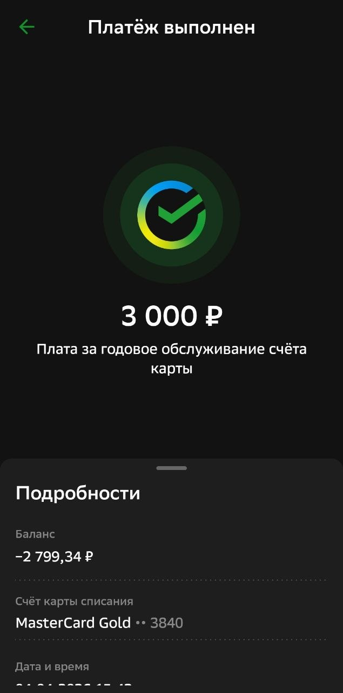
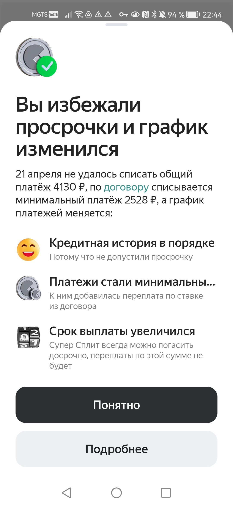
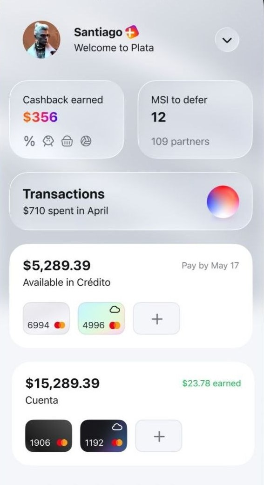
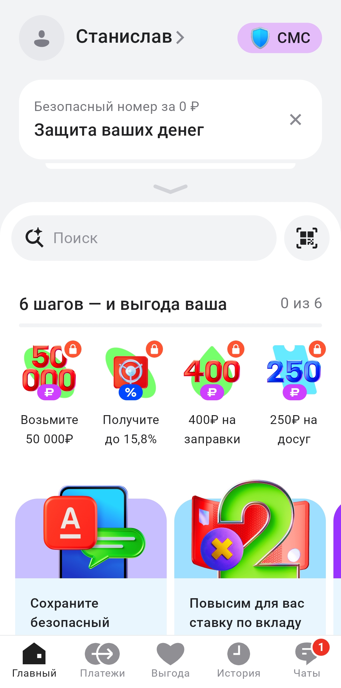

1. Тихие списания и Forced Continuity (кейс СберБанка)
В рамках анализа пользовательского опыта в продуктах СберБанка выявляется паттерн Forced Continuity (принудительная непрерывность обслуживания), реализуемый через автоматическое списание ежегодной комиссии за обслуживание. В одном из кейсов пользователь обнаруживает задолженность −2799,34 ₽ после списания 3000 ₽ за годовой тариф.
Ключевая UX-проблема заключается не в самом факте списания, а в его “тихом” характере: уведомления о предстоящем списании отсутствуют либо не акцентируются в момент, когда пользователь мог бы предотвратить транзакцию. Списание происходит как операционное событие по умолчанию.
Юридически механизм может соответствовать подписанным условиям обслуживания, однако с точки зрения UX-информирования критический параметр — прозрачность — реализован через многоуровневые документы (включая длинные PDF-условия), что снижает вероятность осознанного согласия в момент продления услуги.
«Forced Continuity работает не через запрет отмены, а через инерцию пользователя: подписка продолжается по умолчанию, а момент продления становится невидимым».

Бизнес-модель vs UX-этика
Модель тихих списаний опирается на поведенческую инерцию: значительная часть пользователей не отслеживает дату продления и не ожидает автоматического списания. В результате возникает высокая доля пост-фактум реакций (закрытие задолженности вместо предотвращения платежа).
Экономический эффект такой модели масштабируется за счёт низкой активности отмен и отсутствия явного “pre-charge warning”. Любое усиление прозрачного уведомления перед списанием напрямую снижает конверсию в автоматическое продление.
2. Искусственные временные ловушки (Кейс Яндекс Супер Сплита)
Анализ кредитного продукта Яндекс Банка (Яндекс Пэй / Супер Сплит) с ПСК 58,223% годовых выявляет механизм скрытого временного триггера, влияющего на структуру кредитного договора. Пользователь совершает оплату в установленную дату, однако критическим параметром является не день платежа, а точное время до 21:00 по МСК.
При внесении платежа после 21:00 (например, в 21:15) система не ограничивается стандартной пеней или штрафом за просрочку. Вместо этого Яндекс Супер Сплит автоматически пересчитывает кредитную модель: может изменяться срок погашения (до 24 месяцев), пересобираться график платежей и увеличиваться итоговая переплата по договору.
Таким образом, даже минимальное нарушение временного окна приводит не к линейной санкции, а к структурному изменению условий кредитного продукта, что фактически эквивалентно пересогласованию финансовой модели без отдельного явного действия пользователя.
«Когда финтех-продукт меняет не штраф, а саму кредитную модель после дедлайна — временной UX превращается в механизм скрытой переоценки договора».

UX-эффект
В рамках Яндекс Пэй / Яндекс Банка временной порог 21:00 функционирует не только как дедлайн, но и как триггер изменения кредитной логики Супер Сплита. Пользователь ожидает штрафную модель, однако система применяет нелинейную пересборку условий договора.
Это формирует скрытую асимметрию: интерфейс транслирует простое правило «успей до времени», тогда как реальный эффект — изменение финансовой конструкции кредита.
3. Визуальный шум и смещение фокуса (Plata)
Внешне дашборд выглядит премиально (glassmorphism, воздух, мягкие градиенты). Однако за визуальной чистотой скрывается нарушение базовых принципов визуальной иерархии: ключевые финансовые показатели и риск-информация смещены в менее заметные зоны интерфейса. Внимание пользователя перенаправляется на декоративные элементы и маркетинговые блоки, связанные с кредитами и дополнительными продуктами.

Вывод исследователя
Когда продакт просит «сделать условия менее заметными», он фактически просит спроектировать когнитивную ловушку.
В финтехе доверие является ключевым UX-активом, и его разрушение через визуальный шум приводит к долгосрочной эрозии пользовательского доверия.
4. Смещение финансового ядра и маркетинговая переиерархизация (Alfa Bank Home Screen)
Главный экран Альфа-Банка демонстрирует системное нарушение информационной архитектуры, при котором финансовое ядро продукта (баланс, карта, операции) теряет первичный визуальный и смысловой приоритет. Вместо этого верхний уровень интерфейса формируется маркетинговыми и продуктово-эмоциональными блоками: «защита ваших денег», бонусы, вклады и акции.
Это создаёт паттерн False Hierarchy: визуальная и смысловая иерархия интерфейса не отражает реальную значимость сущностей для пользователя. Финансовое состояние аккаунта перестаёт быть точкой входа в систему и смещается ниже по структуре экрана, уступая место коммерческим сценариям банка.
Дополнительно фиксируется эффект Misdirection: пользователь приходит в приложение с задачей контроля денег (баланс, карта, операции), но первичные интерфейсные паттерны перенаправляют внимание в сторону «выгоды», «защиты» и инвестиционных предложений. Таким образом, core task заменяется бизнес-ориентированными сценариями вовлечения.
На визуальном уровне возникает Visual Noise и частичный Overloading: несколько финансовых показателей и разнотипных карточек конкурируют за внимание, при этом отсутствует единый доминирующий объект (например, баланс как визуальный якорь). Это дробит восприятие и усложняет быстрый счёт текущего состояния средств.
«Когда финансовое ядро уступает место маркетинговой витрине, интерфейс перестаёт отвечать на главный вопрос пользователя — и начинает конкурировать за его внимание»

UX-интерпретация (IA / Visual / Behavioral)
На уровне информационной архитектуры (IA) наблюдается смещение приоритетов: маркетинговые и продуктовые сущности поднимаются выше финансового ядра. Это формирует False Hierarchy, где коммерческая ценность интерфейса начинает доминировать над пользовательской задачей управления деньгами.
На визуальном уровне интерфейс усиливает конкуренцию за внимание через множественные карточки, разнотипные метрики и отсутствие единого фокуса. Это приводит к Visual Noise и частичному Overloading, снижая скорость считывания финансового состояния.
На поведенческом уровне формируется Goal Substitution эффект: пользователь вместо проверки баланса начинает взаимодействовать с продуктовой витриной (вклады, бонусы, защита), что увеличивает вовлечённость в экосистему банка, но снижает прямую эффективность выполнения базовой задачи.